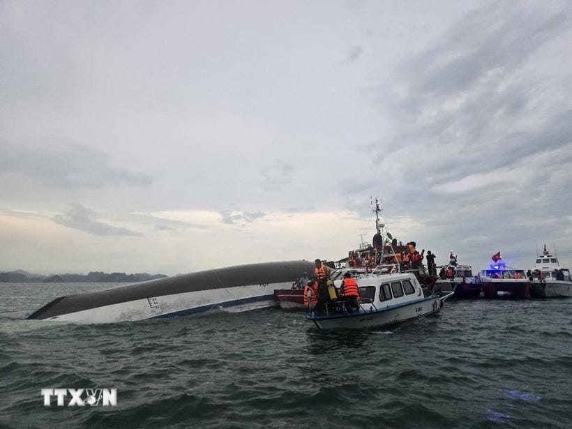

世界苦茶07月20日新闻 | 41条 | 美国众议院通过援助乌克兰法案

美国众议院通过援助乌克兰法案 | 1.2万亿雅鲁藏布江水电站 | 杭州水异味源于藻类分解 | 越南游船倾覆已酿27死 | 刚果与卢旺达M23达成协议
今日三条新闻分析
苦茶数据
美元兑人民币：7.17（昨日7.18，前日7.18）
美元兑日元：148.49（昨日148.72，前日148.59）
上证指数：休市（昨日3534，前日3435）
标普500指数：休市（昨日6296，前日6297）
比特币：118009（昨日118296，前日120330）
布伦特原油：69.28（昨日70.12，前日68.78）
中国新闻
• 雅鲁藏布江水电开工 ：在西藏调研的中国总理李强，星期六出席雅鲁藏布江下游水电工程开工仪式并宣布工程开工。这一史上成本最高昂的基础设施项目，此前曾引发下游国家印度与孟加拉国担忧。据新华社报道，雅鲁藏布江下游水电工程开工仪式星期六上午在西藏林芝市举行。李强出席开工仪式，宣布工程正式开工。报道称，雅鲁藏布江下游水电工程位于林芝市。工程主要采取截弯取直、隧洞引水的开发方式，建设五座梯级电站，总投资约1.2万亿元人民币。工程电力以外送消纳为主，兼顾西藏本地自用需求。
• 中纪委半年处分42万人 ：中共中央纪委国家监委最新通报称，今年上半年共处分42万人，其中包括30名省部级干部、1876名厅局级干部。中央纪委国家监委星期六发布今年上半年全国纪检监察机关监督检查、审查调查情况，上半年全国纪检监察机关共接收信访举报190.6万件次，其中检举控告类信访举报58.9万件次。处置问题线索120.6万件。今年上半年共立案52.1万件，其中省部级干部43人、厅局级干部2335人、县处级干部2万人、乡科级干部6.8万人；立案现任或原任村党支部书记、村委会主任4.8万人。 （翻評：2024年查處89萬人，我感覺這絕對是有數字的。）
• 林定国谈应对软对抗 ：香港律政司长林定国说，要用软实力处理软对抗问题，令市民对国家有更多正确理解，从而增加理性基础及对国家的认同感，自然不会对误导性言论太上心。综合香港电台和Now新闻台报道，林定国星期六在电台节目访问中作出上述判断。他还说：“有些所谓软对抗根本是犯法活动，其实不用软对抗这个字，那是犯法，犯法便依法办事，有充分证据及法律原则适用，我们便将这件事交予法院决定。”至于不属于犯法的软对抗，林定国认为也可能有误导性，目的是令香港市民对港府或北京产生负面或不理性的憎恨情绪，有必要以正视听。他强调要确保市民接收的资讯准确，但绝非“要拉要锁”。
• 杭州水异味源于藻类分解 ：中国浙江省杭州市自来水气味异常事件持续发酵，官方星期六发布情况通报，指初步查明为藻类厌氧降解产生物质导致自来水的异味。杭州市余杭区政府星期六在微信公众号“余杭发布”通报，仁和水厂星期三上午8时发现水质嗅味指标异常，经采样分析确认后随即启动供水突发事件应急预案，切换水源，供水水质得到有效控制，出厂水质安全。根据通报，情况发生后，当局立即启动调查程序，并成立由国家、省级专家等组成的调查组，已初步查明导致异味的为特定自然气候条件下藻类厌氧降解产生的硫醚类物质，具体原因正在进一步溯源调查中，有关结果将及时公布。
• 日药企员工间谍罪不上诉 ：日本药企男员工在中国被控间谍罪，判监禁三年半。这名男员工在上诉期限届满前决定不提上诉。日本共同社星期六引述日中消息人士称，这起案件上诉期将在本月下旬截止，但上述男子不打算就判刑提出上诉。据此前报道，北京市法院星期三判日本安斯泰来公司的一名日籍男员工间谍罪成，处以三年六个月有期徒刑。
• 小三通航线因台风全停 ：受今年第六号台风“韦帕”影响，两岸小三通四条客运航线星期六全部停航。综合中新社和央广网报道，中央气象台消息，台风“韦帕”星期六上午8时中心位于距离广东省阳江市东偏南方向约860公里的南中国海东北部海面上。预计“韦帕”将以约20公时速向西偏北方向移动，强度逐渐加强。福建省防汛抗旱指挥部星期五上午11时启动防台风四级应急响应，目前仍维持相关响应。预计台风“韦帕”将向广东深圳到海南文昌一带沿海靠近，将在星期天下午至夜间在上述沿海登陆。
• 李在明或缺席北京纪念活动 ：考量到韩美同盟等因素，韩国总统李在明可能缺席在北京举行的抗战胜利80周年纪念活动。韩联社星期五引述韩国执政阵营消息指出，李在明可能不会出席9月3日在北京举行的“中国人民抗日战争暨世界反法西斯战争胜利80周年”纪念活动。一名执政党内部人士透露，考虑到韩美同盟的立场，李在明出席这类活动“似乎不太合适”。“据我了解，总统室也很清楚相关情况，考虑李在明缺席的方案。”
亚太印太新闻
• 越南游船倾覆27死 ：一艘载有53人的越南游船在北部广宁省旅游区下龙湾倾覆，造成至少27人死亡。事故发生在星期六下午1时45分左右，即台风“韦帕”移入南中国海不久后。下龙湾大果洞附近海域刮起强风、出现巨浪，导致一艘注册号为QN-7105的游船倾覆。越南《青年报》报道，游船上载有53人，包括48名游客和五名船员。
• 海基会称台民有抵御能力 ：台湾海峡交流基金会秘书长罗文嘉说，他相信台湾民众的素质能抵御中国大陆的渗透威胁。据台湾海基会官网消息，罗文嘉星期五在背景说明会上介绍，海基会整理的公开资料显示，自去年1月至今年6月，已公开侦办的中国大陆间谍对台渗透案共计29件、涉案人数达95人。目前已有20件判刑、七件起诉、两件在侦查中，军方单位是大陆渗透的主要目标，占比高达八成。罗文嘉指出，除台湾外，大陆也对其他国家进行渗透，今年上半年全球有八个国家共计17件大陆渗透案，涉及美国、法国、捷克、德国、韩国与菲律宾等。
• 韩国瑜批罢免行动 ：台湾大罢免进入投票前的最后黄金周，国民党籍立法院长韩国瑜批评，民进党发动“国家资源”罢免蓝营31席立委是“政治大屠杀”，还称向外宾介绍台湾民主时“我的心比肾还虚”。综合台湾《联合报》《上报》报道，韩国瑜星期六在花莲为国民党立法院党团总召傅昆萁站台扫街，随后参与花莲“反恶罢战独裁团结大会”。韩国瑜在致词时说，选举罢免创制复决都是人民的权利，但是民进党用“国家资源”，罢免国民党31席立委，“这是一场政治大屠杀，把反对党杀光光，不是民主”。
科技新闻
• 黑石退出TikTok美区交易 ：全球私募股权巨头黑石集团据报退出收购TikTok美国业务的交易，突显这项交易的高度复杂性与不确定性。知情人士星期五向路透社透露，黑石集团原计划在这项由美国总统特朗普主导的交易中，入股TikTok美国业务、持有少数股份，但目前已决定退出。这个由字节跳动现有投资者——Susquehanna国际集团与泛大西洋投资集团牵头的财团，曾被视为最有希望接手TikTok美国业务的领跑者。
• SpaceX工伤率业内最高 ：SpaceX的一份员工安全记录显示，该公司员工在 “星舰基地” 受工伤的可能性高于其他任何制造工厂。根据美国职业安全与健康管理局5月份发布的数据，Starbase作为一个庞大的发射和制造基地，2024年该基地的受伤率几乎是同类航天器制造机构平均水平的6倍，比整个航空航天制造业高出近3倍。根据提交给OSHA的数据，SpaceX公司的TRIR在2024年达到了每100名工人4.27次受伤的峰值，而当时该公司平均雇佣了2690名工人。
财经新闻
• 中国电车占领印尼市场 ：印度尼西亚汽车工业协会日前发布的数据显示，今年上半年印尼市场纯电动车销量同比大增267％至3万5749辆，其中中国汽车品牌占总销量的93％，有效助力印尼汽车工业发展和电动化转型。据印尼汽车工业协会统计，中国品牌纯电动车中，比亚迪为销量领跑者，上汽通用五菱、奇瑞和广汽埃安等也榜上有名。 （翻評：印尼上半年汽車銷量一共，已發布車型合計的批發量 374,740 輛，同比‑8.6 %，現在純電車滲透率接近10%。）
• LV香港客户资料泄露 ：法国奢侈品牌路易威登香港分公司在事发逾两周才通报，香港客户个人资料外泄，但称不涉及支付信息。综合香港《明报》和网媒“香港01”报道，香港个人资料私隐专员公署受询时证实，星期四接到LV香港分公司关于客户个资外泄事件通报。初步调查显示，41万9000名香港客户受影响，外泄个资包括姓名、护照号码、出生日期、地址、电邮地址、电话号码、购物记录和产品喜好等。
• 台美关税谈判被疑拖延 ：台湾仍在与美国就关税问题进行协商，具体税率尚未定案。但国民党质疑台美谈判或许早已结束，民进党政府担心关税影响罢免结果，刻意延后至7月26日投票结束后才公布。随着美国总统特朗普陆续向欧盟和全球多国发出“关税信”，台湾、印度、以色列等美国伙伴的具体税率仍悬而未决。美国《纽约时报》本周引述台美消息人士称，双方已接近达成“握手协议”，但尚未就核心议题达成共识。综合台湾《自由时报》《联合报》等报道，国民党发言系统近期多次要求民进党政府提高透明度，公开台美关税谈判进度。台北市长蒋万安与“战斗蓝”领袖赵少康等蓝营人士更质疑，政府可能已与美国谈妥关税方案，但结果不如预期，为避免影响罢免投票刻意延后宣布。
• 台积电审慎应对汇率风险 ：在全球积极扩展产能以满足人工智能晶片需求飙升的同时，台积电对今年资本支出保持审慎立场，以应对不断加剧的宏观经济和汇率波动。台积电首席财务官黄仁昭星期五接受彭博电视采访时说，汇率波动已成为台积电利润率面临的“一大变数”，公司将积极检讨对冲策略以减轻影响。作为苹果和英伟达的晶片供应商，台积电目前维持最高420亿美元的年度资本支出计划不变。台积电星期四将全年营收增长预期上调30%，巩固市场对Meta、谷歌等大型科企将在数据中心持续投入的预期。
• 中国风投筹资重燃热潮 ：中国最大的几家风险投资公司正筹集至少20亿美元新资金，重新点燃对中国初创企业的投资热潮。彭博社星期五引述知情人士报道，至少六家中国知名风投机构正设立新的美元基金，为海外投资者提供投资中国企业的渠道。参与募资的包括：曾投资美团、拼多多的光速光合创业投资基金，为一支聚焦深度科技的基金筹集至少4亿美元；曾投资人工智能新创“月之暗面”的砺思资本，正启动规模2.65亿美元的第二支基金；泡泡玛特的投资方，黑蚁资本则计划募集1.5亿美元新资金；由原启明创投合伙人甘剑平创办的渶策资本也寻求筹集2亿美元。今年早些时候，启明创投已着手募集8亿美元。
• 中国打击战略矿产走私 ：中国官方通报，目前已侦办一批战略矿产非法出口案件，抓获一批走私犯罪嫌疑人，并强调将对战略矿产走私出口“零容忍、出重拳”。据中国商务部官网消息，中国国家出口管制工作协调机制办公室星期六组织商务部、公安部、国家安全部、海关总署、国家邮政局、最高人民法院、最高人民检察院等单位，在广西南宁召开打击战略矿产走私出口专项行动推进会。会议总结通报前期进展成效，全面分析当前打私形势，对专项行动进行再部署、再推进。
• 美议员批H20晶片出口中国 ：美国共和党众议员警告，美国政府允许英伟达向中国出口H20晶片，恐将助长中国的军事能力，并进一步强化中国在人工智能领域与美国竞争的实力。综合路透社和彭博社报道，众议院美国与中共战略竞争特别委员会主席穆勒纳尔星期五致信商务部长卢特尼克，指出放行H20晶片出口可能削弱美国在AI领域的领先地位，并协助中国企业在全球AI模型市场上争夺份额。他在信中写道，H20是一款高性价比且性能强大的AI推理晶片，远超中国现有的技术能力，可能显著推动中国AI发展。
• 中国反对欧盟制裁中资银行 ：欧盟对俄罗斯采取的最新一轮制裁方案内，包括两家中国地方金融机构，中国驻欧盟使团对此表达不满和反对，并指这么做的影响极其恶劣。中国驻欧盟使团发言人星期六在官方微信公众号上就欧盟第18轮对俄制裁列单两家中国金融机构答记者问时说，中方一贯反对没有国际法依据、未经联合国安理会授权的单边制裁。发言人指出，欧方在第18轮对俄制裁中列单两家中国金融机构，这个性质和影响都极为恶劣。中方对此表示强烈不满、坚决反对，并已向欧方提出严正交涉。中方将采取坚决措施维护自身正当权益。
俄乌战争
• 美国众议院通过新一轮对乌军事援助法案，确保持续支持： 据乌克兰防务媒体《Militarnyi》7月19日报道，美国众议院已通过新法案，以继续对乌克兰提供军事援助，巩固国会两党对基辅抗击俄军的支持。众议员唐·培根周四晚在X平台上证实了这一消息，他写道：“我们通过了又一项法案，以确保对乌克兰的军事支持得以延续。”他补充称，该法案还确保“我们的国防工业能够不间断地继续生产”。据《Militarnyi》报道，此次法案确保向乌克兰军队持续供应武器、装备与后勤支持，其中包括精确弹药、装甲车辆和防空系统的连续交付。尽管此次援助的具体金额尚未公开，但近期类似的援助方案金额通常在20亿至60亿美元之间。
• 乌提议恢复对俄谈判 ：乌克兰总统泽连斯基说，乌方已向俄罗斯提议于下周举行新一轮会谈。这将是双方一个多月以来首次尝试恢复直接谈判。彭博社报道，泽连斯基星期六发表全国讲话时透露，国家安全与国防委员会新任秘书乌梅罗夫已就此向俄方正式提出建议。乌梅罗夫前一日刚刚履新，他曾任乌克兰国防部长，并在6月主导与俄罗斯的前一轮直接谈判，促成大规模战俘交换的启动。泽连斯基说：“谈判的节奏必须加快……必须尽一切努力促成停火。俄罗斯方面应停止回避关键决策。”
• 乌克兰人撤离格鲁吉亚 ：乌克兰政府星期六说，当局已撤离43名近期被俄罗斯驱逐出境的乌克兰公民，他们被关押在格鲁吉亚，拘留条件相当恶劣。援助组织“第比利斯志愿者”称，有至少56名乌克兰人被关押在俄格边境附近的一个地下设施，他们当中，大部分人是在服刑期满后被勒令离开俄罗斯。乌克兰外长瑟比加说，43名乌克兰人已从格鲁吉亚撤离，其中许多人缺乏证件。他指出，仍有许多人滞留在俄格边境，生活环境艰难。
• 俄无人机袭击敖德萨 ：乌克兰当局说，俄罗斯军队星期六凌晨对乌克兰黑海港口城市敖德萨发动大规模无人机袭击，造成一名居民死亡和数人受伤。乌克兰总统泽连斯基在Telegram上说，俄军对敖德萨的袭击造成六人受伤，包括一名儿童。他也说，俄方对乌克兰多个地区发射30多枚导弹和300架无人机，重申空防对乌克兰的重要性。
• 英下调俄油价并制裁情报人员 ：英国下调俄罗斯原油出口的价格上限，并对俄情报机构进行制裁。新华社报道，英国外交部星期五发表声明说，英国与欧盟将俄罗斯原油出口的价格上限，从每桶60美元降至47.6美元。此举将打击俄石油产业，拉低俄原油市场价值，重创俄“重要资金来源”。同日，英国外交部还宣布制裁隶属于俄罗斯情报总局的三家机构及18名情报人员，称这些制裁对象长期执行网络攻击任务。
• 澳洲交付乌克兰艾布拉姆斯 ：澳大利亚国防部星期六宣布，已向乌克兰交付首批M1A1艾布拉姆斯坦克。澳洲国防部声明说，澳洲应乌克兰政府的要求，提供了49辆M1A1“艾布拉姆斯”坦克。目前乌克兰已接收大部分坦克，最后一批坦克预计将在未来几个月交付。这项援助计划价值约2亿4500万澳元，是澳洲承诺向乌克兰提供的15亿澳元援助的一部分。
• 德英签署二战以来首个防务协定，俄方发出军事警告： 德国与英国签署了二战以来的首个双边防务协定，承诺若一方遭受攻击，另一方将提供支援，进一步加深两国的防务整合。在签署仪式期间，两国领导人还暗示将开启对乌克兰提供远程武器的新阶段。不久之后，俄罗斯外交部再次发出警告称，此类举动可能招致对欧洲国家的军事打击。这一名为“肯辛顿条约”的协议于周四在伦敦签署，内容广泛，涵盖从联合军工出口到两国之间的学校交流项目等多个领域。该协议还明确承诺：“在任一方遭受武装攻击时，盟国将彼此援助，包括军事手段。”德国总理弗里德里希·梅尔茨表示：“这是德英关系史上具有转折意义的一天。”
国际新闻
• 美国洛杉矶7月19日发生汽车撞人事件，造成30人受伤，其中7人伤势严重： 目击者称，出事前有一人被夜总会的人从里面轰出来，然后此人开着一辆银灰色的尼桑两厢小轿车冲向门口的人群，最后撞到一辆卖热狗的餐车。事发后围观者把司机从车里拉出来击打，混乱中还有人开枪射击。警方确认，驾车司机受枪伤，已被送往当地医院。目击者称，枪手为一名身高一米七左右的男子，可能有一把银色的左轮手枪。事件中的受伤者多是当时等在夜店外的客人、代客泊车服务员和街边摆摊的小贩。目前事发原因或动机尚不清楚。警方认为司机醉酒，没有迹象表明司机有其他犯罪意图或与恐怖主义有关。
• 苏韦达武装冲突平息 ：叙利亚政权内政部发言人努尔丁·巴巴说，叙南部苏韦达省首府苏韦达市内的所有贝都因部落武装人员已全部撤离，市内各街区的冲突已停止。新华社报道，努尔丁·巴巴星期六在社交平台发布声明说，为落实停火协议，隶属于叙内政部的安全部队当天早些时候已在苏韦达省北部与西部地区展开部署，以恢复秩序并防止新的冲突发生。总部设在英国的“叙利亚人权观察组织”当日也发消息说，德鲁兹武装人员当天发起大规模反攻，在经过数小时激战后重新控制苏韦达市全部街区，迫使贝都因部落武装撤出城区。
• 苏韦达冲突致940死 ：总部位于英国的叙利亚人权观察组织星期六说，自上星期天以来，叙利亚南部苏韦达省的冲突所造成的死亡人数已经增至940人。这个组织指出，死于冲突的包括326名德鲁兹武装人员和262名德鲁兹平民，并称其中182人是被叙利亚国防部和内政部人员处决。其他死者还包括312名叙政府安全人员和21名逊尼派贝都因人，其中三人是平民，他们被德鲁兹武装分子处决。
• 叙约美三方会谈 ：约旦副首相兼外交大臣萨法迪、叙利亚政权外交负责人希巴尼，以及美国驻土耳其大使兼叙利亚问题特使巴拉克，星期六在约旦首都安曼举行三方会谈，围绕叙利亚当前局势展开磋商。新华社报道，据约旦外交部发布的声明，三方就叙利亚落实停火协议的具体措施达成共识，其中包括：在叙南部苏韦达省部署叙政府安全部队、释放冲突各方所扣押人员、推进苏韦达地区的社会和解、加强国内和平进程，并扩大人道主义援助的覆盖面。萨法迪与巴拉克对叙政权承诺追究袭击平民行为者的责任表示欢迎，支持其打击暴力、宗派主义和仇恨言论的努力。两人强调，约旦和美国坚决支持叙利亚的安全、稳定、主权与领土完整，并呼吁叙政权推动法治建设，保障公民安全。
• 洛杉矶撞人事故28伤 ：一辆汽车在美国加利福尼亚州洛杉矶冲入东好莱坞地区的人群，造成20多人受伤。新华社引述当地消防局星期六发布的声明说，估计至少有四五人状态危急，八至十人伤势严重。洛杉矶消防局正在协调伤者的分诊与转运。法新社引述洛杉矶消防部门称，事故造成28人受伤，但并未提及事故原因。
• 特朗普曾画带色生日贺卡 ：《华尔街日报》近日报道，美国总统特朗普曾给已故美国富商爱泼斯坦写过内容粗俗的生日贺信，信中含有带性暗示的插图。特朗普坚决否认写过这封信或画过相关图画，还称自己不会画画。不过，《纽约时报》星期五报道，多年来有大量被认为出自特朗普之手的素描作品在拍卖会上出售，其中许多作品可追溯到他在纽约担任房地产开发商时期。这些署名特朗普的画作通常是用黑色马克笔绘制的简易城市风景或地标，并于2000年代初捐赠给慈善机构，随后在转售中拍出数千美元的高价。
• 哈马斯称愿释放人质换停火 ：哈马斯下属武装派别卡桑旅发言人说，哈马斯近几个月多次提出一项全面协议，愿意一次性释放所有被扣押人员以达成加沙地带永久停火，却遭到以色列政府拒绝。新华社报道，哈马斯下属武装派别卡桑旅发言人乌拜达星期五发表视频讲话说，显然，内坦亚胡政府并没有把被扣押人员获释作为优先事项。他表示，哈马斯正努力达成一项协议以结束以色列对巴勒斯坦人民的战争，确保以色列军队撤出加沙地带，并为加沙人民带来援助物资。如果以色列阻挠或退出本轮谈判，哈马斯无法保证会支持就部分停火达成协议或同意先期释放10名被扣押人员。哈马斯与以色列7月6日起在卡塔尔多哈举行新一轮间接谈判，寻求达成一项为期60天的停火协议，内容包括释放10名被扣押人员并交还另外几名被扣押人员的遗体。由于双方就以色列撤军方案、是否导向全面永久停火等议题分歧较大，谈判尚未取得重大进展。
• 美撤巴西法官签证批“猎巫” ：美国宣布撤销巴西联邦最高法院一名法官的签证，并称针对巴西前总统博索纳罗的调查为“猎巫”行动。法新社报道，美国国务卿鲁比奥星期五发表声明说，巴西联邦最高法院法官德莫赖斯针对博索纳罗的猎巫行动造成广泛的迫害和审查，不仅侵犯巴西人的基本权利，而且还延伸到巴西境外，针对美国人。鲁比奥说，德莫赖斯的签证限制也适用于巴西最高法院中支持德莫赖斯的法官，以及这些法官的直系亲属。
• 特朗普起诉默多克索赔百亿 ：美国总统特朗普根据联邦诽谤法，向迈阿密市一家联邦法院起诉媒体大亨默多克和新闻集团、道琼斯公司以及《华尔街日报》两名记者，索赔至少100亿美元。综合法新社和路透社报道，特朗普星期五上午在社交媒体贴文说：“我们刚对所有在破烂小报《华尔街日报》发表虚假、恶意、诽谤、假新闻的人提起一桩重磅诉讼。”他写道，期待默多克“在我起诉他和他那‘垃圾堆’报纸《华尔街日报》的案子中作证”，“那将会很有趣”。
• 巴西法院限制博索纳罗活动 ：巴西联邦最高法院法官德莫赖斯裁定，前总统博索纳罗存在胁迫司法、妨碍司法、公然危害国家主权的行为，下令对博索纳罗采取限制措施。新华社报道，巴西联邦最高法院星期五下令，博索纳罗必须戴电子脚镣接受行程监控；每周一至周五晚7时至次日早6时不得外出，周末及节假日则需全天居家软禁；此外，禁止他与外国官员、外交官联络以及使用社交媒体。巴西警方当天搜查博索纳罗在巴西利亚的住所。警方消息和联邦最高法院的声明显示，博索纳罗父子近几个月常与美国政府官员接触，试图促使美国对巴西官员实施制裁。他们被指妨碍司法、企图使巴西宪法法院的工作受到别国干涉，并通过非法和敌对手段影响法庭裁决，构成对司法独立和国家主权的攻击。
• 美对德莫赖斯签证实施制裁 ：巴西联邦最高法院法官亚历山大·德莫赖斯18日裁定，前总统博索纳罗存在胁迫司法、妨碍司法、公然危害国家主权的行为，下令对博索纳罗采取限制措施。博索纳罗父子近几个月常与美国政府官员接触，试图促使美国对巴西官员实施制裁。他们被指妨碍司法、企图使巴西宪法法院的工作受到别国干涉，并通过非法和敌对手段影响法庭裁决，构成对司法独立和国家主权的攻击。博索纳罗必须戴电子脚镣接受行程监控；每周一至周五晚7时至次日早6时不得外出，周末及节假日则需全天居家软禁；此外，禁止他与外国官员、外交官联络以及使用社交媒体。美国国务院18日发布公告，宣布对德莫赖斯及其“在最高法院内盟友以及他们的直系亲属”实施签证撤销措施。公告说，德莫赖斯对博索纳罗发起“政治迫害”，对后者进行了影响广泛的“镇压与审查”。
• 刚果签和平宣言细节分歧 ：刚果民主共和国政府与反政府武装“M23运动”7月19日签署原则宣言。根据宣言内容，双方将采取以下关键步骤：永久停止敌对行动、释放在押人员、恢复国家机构在冲突地区的治理权、启动通往最终和平协议的直接谈判。然而双方对“M23运动”是否需要从占领地区撤出存在不同表述。政府表示“M23运动”必须从占领地区撤出。“M23运动”强调，原则宣言的条款并不意味着“M23运动”需要从其控制区域撤出。
• 美国拒接受世卫新规修正案 ：美国宣布拒绝接受世界卫生组织为加强防范未来大流行病而提出的《国际卫生条例》修正案。世卫组织成员国于2024年通过具有法律约束力的《国际卫生条例》修正案，为应对最严重、对全球构成威胁的卫生危机引入新的“大流行紧急事件”类别，旨在加强全球对新型病原体的防御能力。路透社报道，美国国务院和卫生部发布联合声明说，他们已于星期五正式转达美国拒绝接受《国际卫生条例》修正案。
• 捷克总统签署法律，将宣传共产主义定为刑事犯罪： 捷克总统彼得·帕维尔于本周四签署了一项对该国《刑法典》的修正案，将宣传共产主义意识形态定为刑事犯罪，与纳粹宣传相提并论。该修法规定，对于“建立、支持或宣传明显旨在压制人权与自由，或煽动种族、民族、国家、宗教或阶级仇恨的纳粹、共产主义或其他运动”的个人，可判处最高五年监禁。此次修法源于捷克历史机构的呼吁，包括“极权制度研究所”，这些机构认为法律在对待纳粹与共产主义宣传之间存在不平衡。